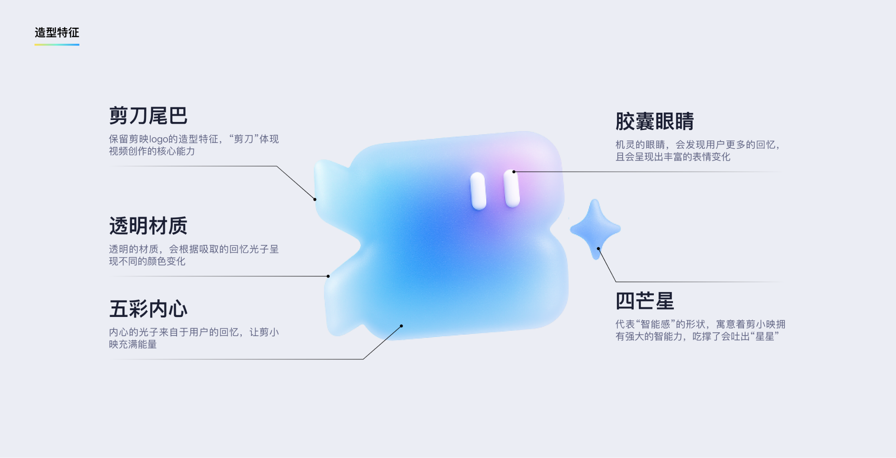
品牌 IP 形象
结合剪小映名称特质、主打私密回忆场景与便捷智能的产品定位，以及 18-35 岁主流用户高度注重情绪价值的消费趋势，参考多款产品拟人 IP 的成功案例，打造专属 IP 形象，既能拉近用户距离、提供情绪价值，也能有效提升品牌记忆度。
专注于全流程设计，包括产品设计、UI视觉设计、品牌系统构建、定制字体和用户研究。拥有十年行业经验，注重品质打磨和项目执行。
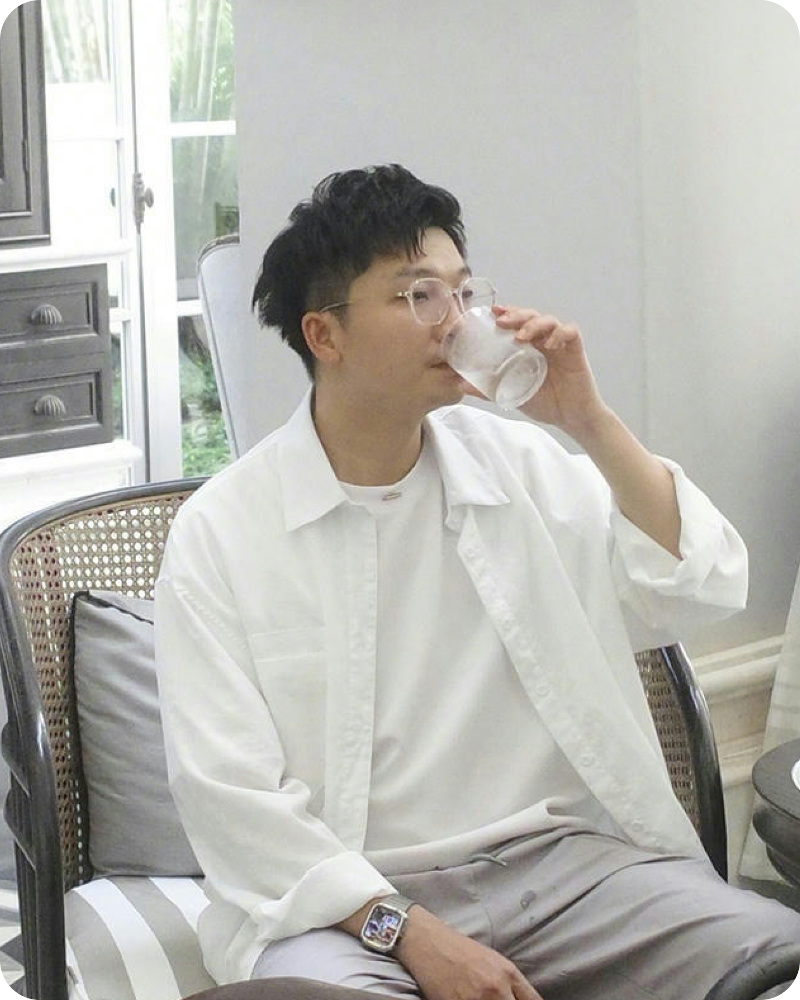
"Designed with intention, felt without effort."
致力于用领先的 AI 图像理解和成片能力，成为用户无需操作的智能生活成片助手，提供一种全新的生活记录方式，打造专属于每个人的生活记录、分享、互动的影像社交产品。让记录更轻松，让回忆更精彩。
查看完整文档
结合剪小映名称特质、主打私密回忆场景与便捷智能的产品定位，以及 18-35 岁主流用户高度注重情绪价值的消费趋势，参考多款产品拟人 IP 的成功案例，打造专属 IP 形象，既能拉近用户距离、提供情绪价值，也能有效提升品牌记忆度。
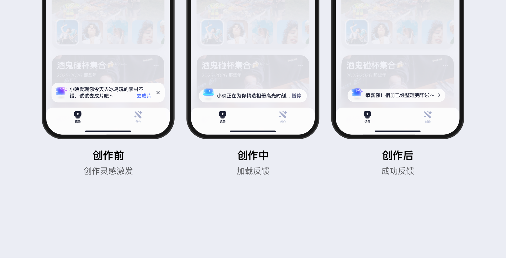
通过 IP 与用户交互行为结合，增强产品的"人感"表达，在框架中，会通过 IP 情绪和更有人味的文案，引导用户操作。
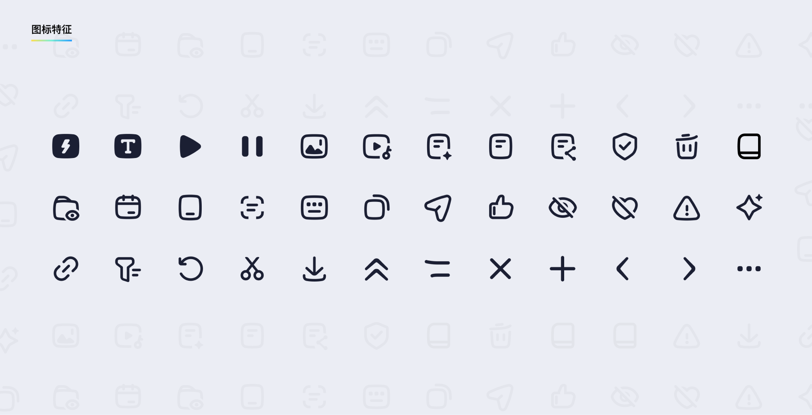
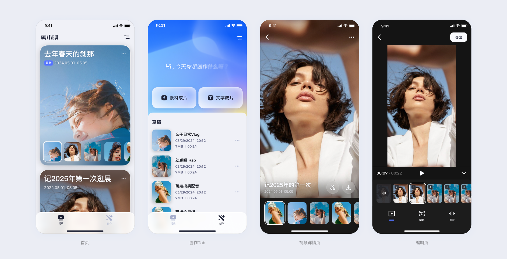
在视觉风格上，提取「剪小映」的造型，提取了 V 形、凹槽、大圆角、眼睛、造型饱满等特征，并对 IP 角色的圆角特征进行抽象提取，采用了统一的圆角梯度设计，不仅增强了整体界面的柔和感，也让产品更具亲和力。
MVP 版本后，通过对设计专家访谈，人群、行业的进一步调研，以及结合产品技术和战略规划，我们快速升级了产品定位，进行了体验升级与社交探索。
快速响应，敏捷迭代
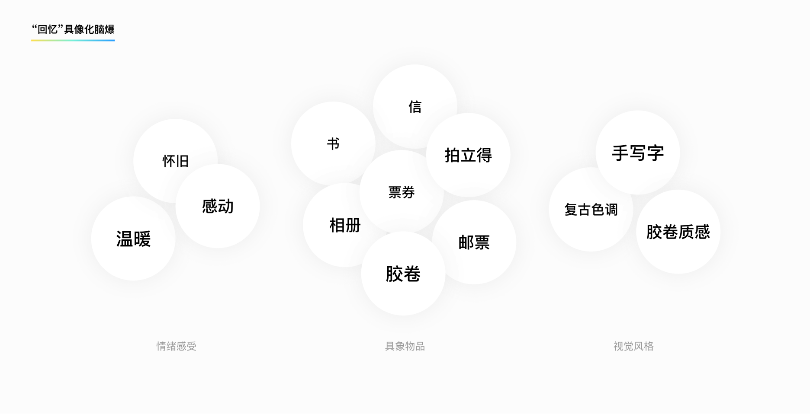
从"回忆"概念联想具象化的视觉元素，从情绪感受、具象物品、视觉风格，脑爆了多种具体的元素，在各种元素中最终选择了"手写字"、"胶卷"作为核心视觉表达。
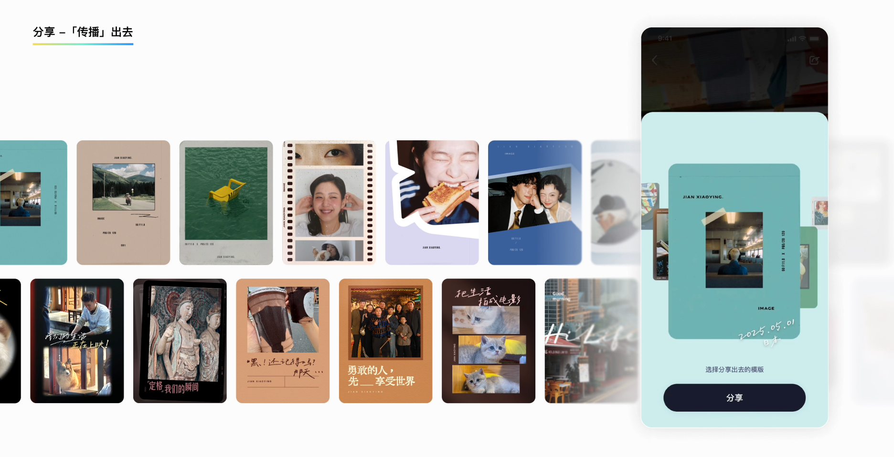
通过 IP 与用户交互行为结合，增强产品的"人感"表达，在框架中，会通过 IP 情绪和更有人味的文案，引导用户操作。
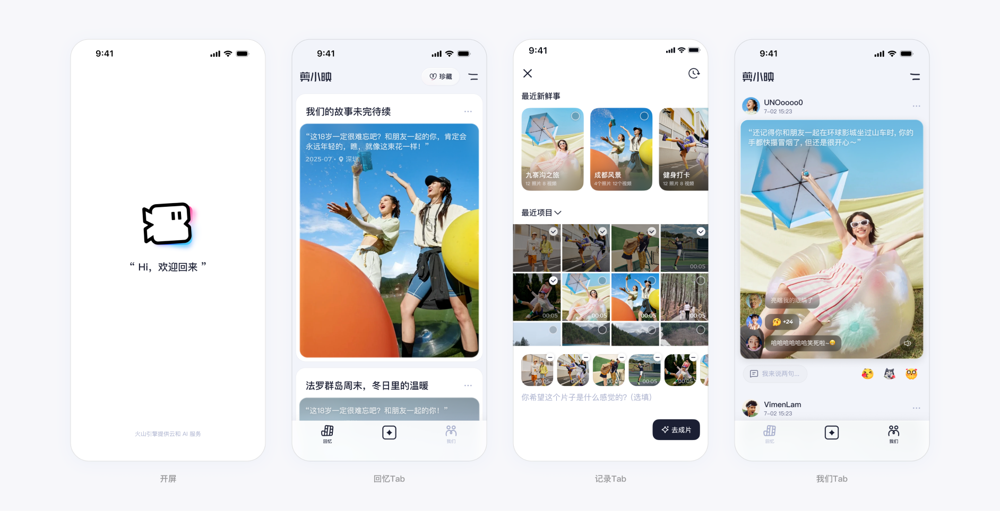
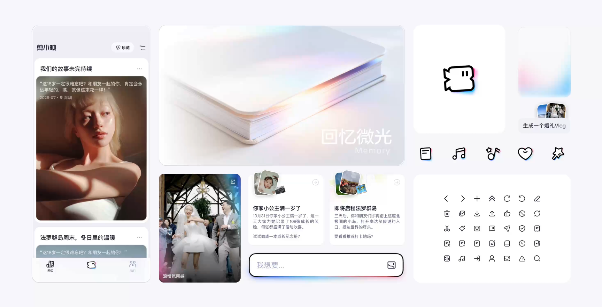
在视觉风格上，提取「剪小映」的造型，提取了 V 形、凹槽、大圆角、眼睛、造型饱满等特征，并对 IP 角色的圆角特征进行抽象提取，采用了统一的圆角梯度设计，不仅增强了整体界面的柔和感，也让产品更具亲和力。
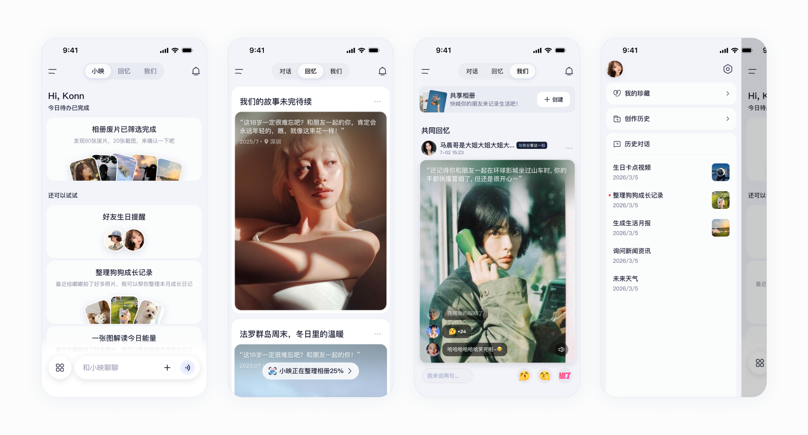
优化首页结构框架与视觉布局，重构顶部 Tab 导航、规整 Skills 展示样式，清晰凸显服务价值并提升浏览效率与视觉观感。
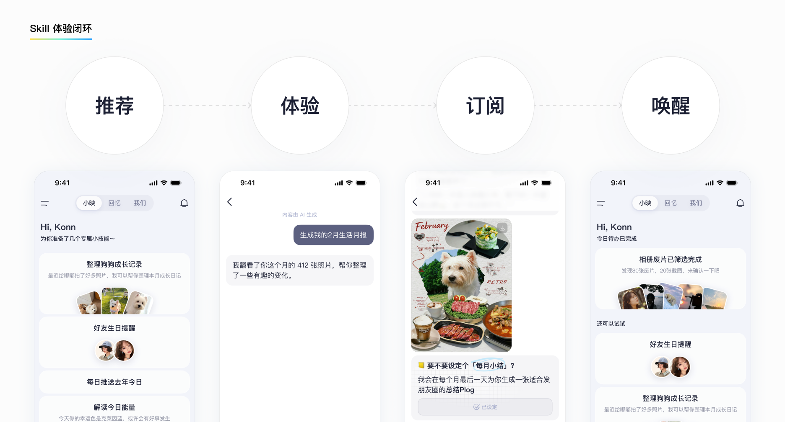
建立从"推荐 Skill → 体验 Skill → 订阅 Skill → 再次唤醒"的体验闭环，通过专属定期推送，建立稳定的唤醒机制，培养用户使用习惯。
AI 技术剪映自研的智能编导模型，能够给视频画面匹配出符合事实且有趣的文案，对于普通用户来说，可以大大降低使用日常素材整合成片的门槛，且成片内容可以有趣好玩，具有激发创作和分享的空间。
查看完整文档App端 AI 能力
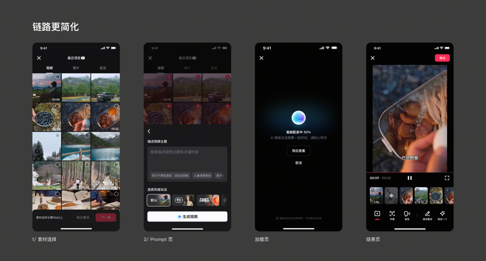
基于目前剪映自研的模型能力，结合用户的高价值需求（一类是有一堆素材但没有时间/没有灵感不知如何成片，另一类则需要提升剪辑效率），在体验流程上体现 AI「聪明」的核心解决思路。
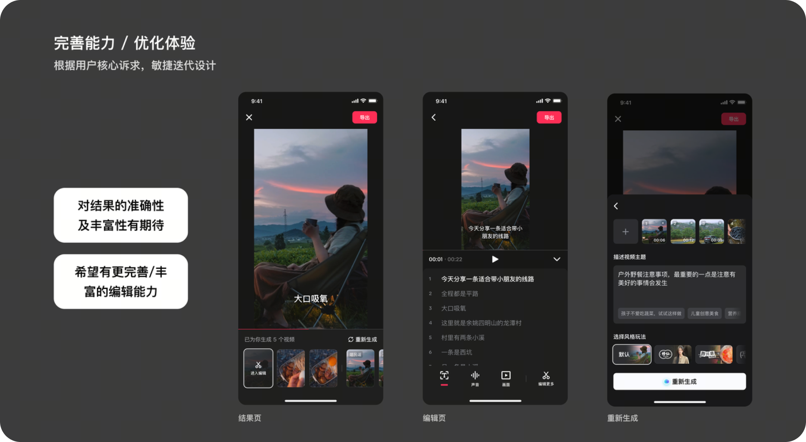
针对用户反馈的两类诉求，在设计上增加了多结果页，区分了结果与编辑的状态，且在编辑页丰富了文案、声音、画面等高频的编辑项，满足绝大多数的编辑诉求，同时开放了更多编辑的入口到多轨道编辑器，以便于更高阶的用户使用高级的编辑项。
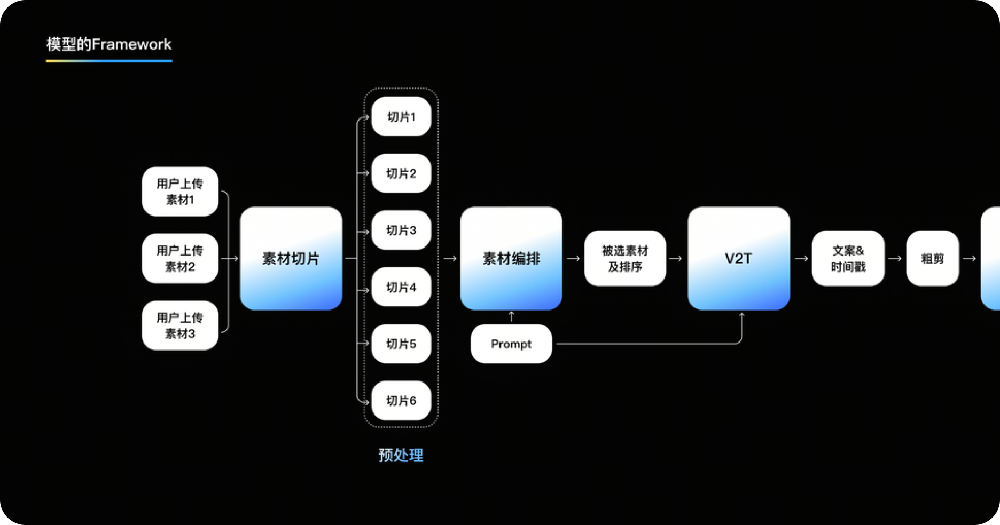
在底层技术方面进行深入的学习，了解技术的能力范围，设计更清楚知道怎么把复杂技术变成简单直观的用户交互形式，也能更有效地和开发、算法团队交流，推动技术实现和产品需求达到平衡。

基于 AI 剪视频的成功验证，把这种「简单」的交互体验，运用到了有类似算法能力的剪同款「大众脚本模板」、「营销成片」、多轨道内「AI 剪辑」，并统一框架，优化成片链路。
Smart Edit 依托于大模型技术，用户能够凭借自然语言对话来进行视频、图片、文案等多种体裁的创作，并且支持内容的生成以及编辑修改。以小工具的形式在剪映 CapCut 推出。
查看完整文档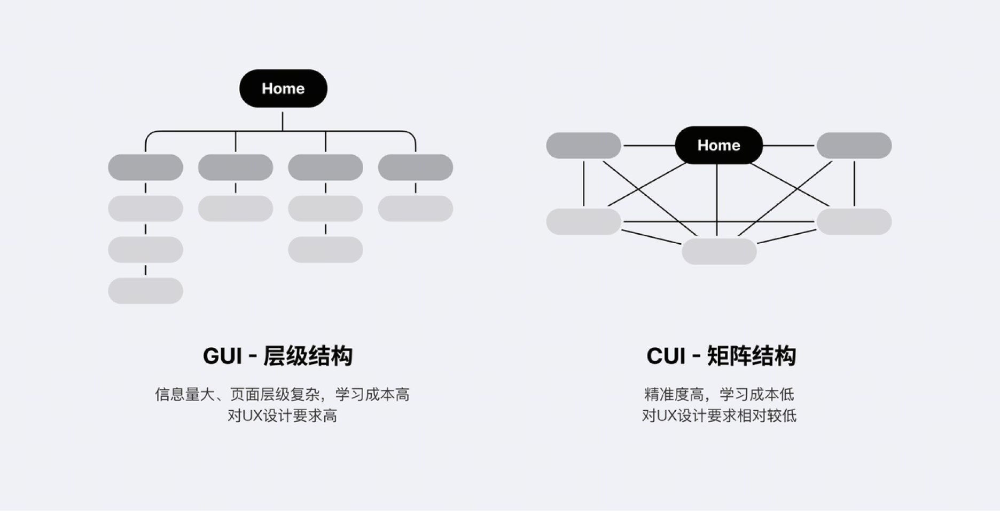
相对于传统的 GUI 在层级结构上信息量大、页面层级复杂、学习成本高，CUI 的矩阵结构上精准度高，学习成本低。随着任务复杂度的增加，CUI 整体的交互成本是处于一个比较稳定的状态：认知成本在跨过了初步的学习门槛之后不再增加，操作成本在处理更复杂的任务时表现为更多轮的对话，用户花费的时间和精力相比 GUI 来说会更少。
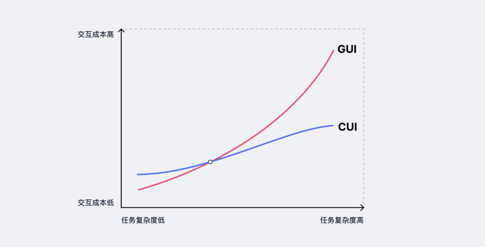
LUI 本质仍是指令输入式交互，文字描述在简单场景下没有点击高效，复杂场景下具有指引模糊，prompt 记忆困难等问题，它的本质决定了其只能在特定场景（如搜索）下发挥作用，其余场景更多是对于 GUI 的补充，而非替代。
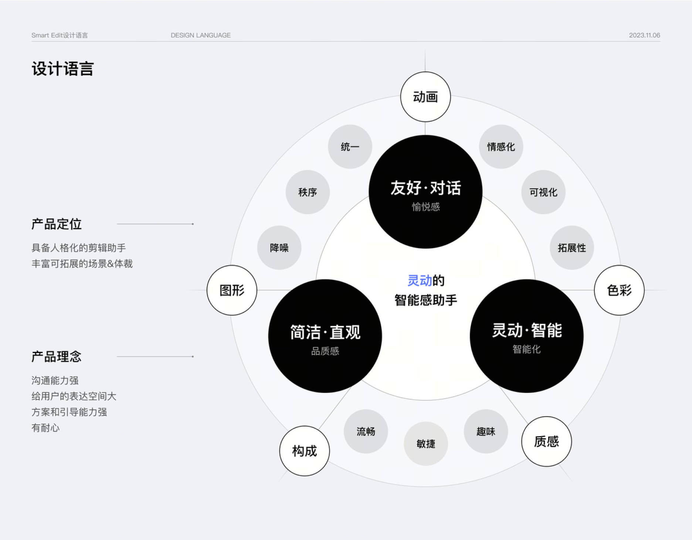
依据产品定位和产品理念，围绕"灵动"这一概念，推导出简洁直观、友好对话、灵动智能的设计原则，并在图形、色彩、构成、质感及动画方面定义具有品牌特征的视觉表现。连接 AI 与人，打破使用隔阂，在体验到智能化功能的同时达到用户的愉悦感及提升产品的品质感。
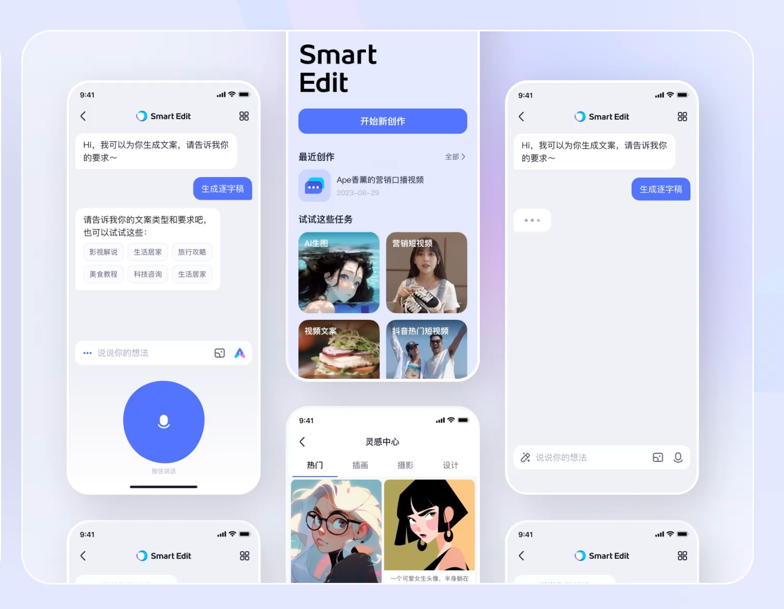
在整体动效上，通过流动（灵动）、透叠、自然惯性去构建 SE 的动效设计要素，让在内容色块与对话页之间的切换，更流畅自然、灵动；文字出现用逐字打字的效果，强化与"人"对话的实时反馈感受；
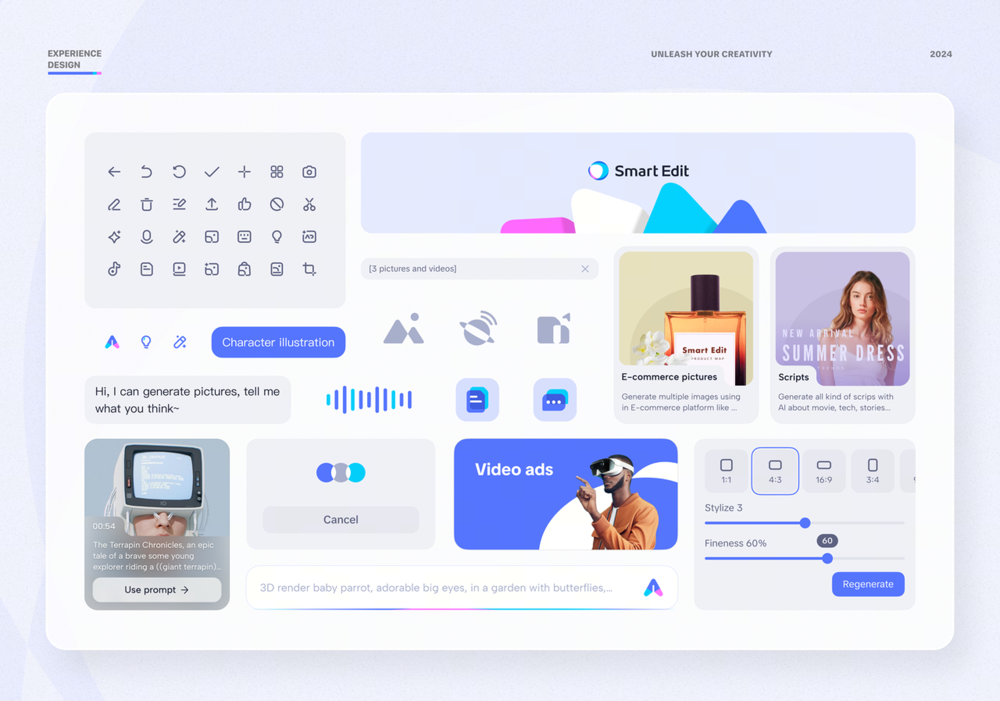
根据前面定义的设计原则，在图形、色彩、质感、构成、动画上都保持了一致性，同时，根据 Web 端的特性，延续了统一的视觉语言。
CapCut 在海外市场竞争逐渐增大，核心的产品能力和优秀的用户体验都缺一不可。针对线上已有的体验问题，我们完整的调研海外工具的设计风格，梳理线上存在的问题，助力产品有更好的体验。
查看完整文档
CapCut
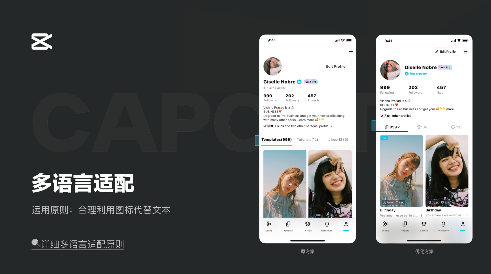
拆分设计风格里的色彩、文本、图形、交互反馈这四个维度，分别进行分析、研究，总结出剪辑工具设计更贴近海外设计风格的方法，并沉淀成文档。
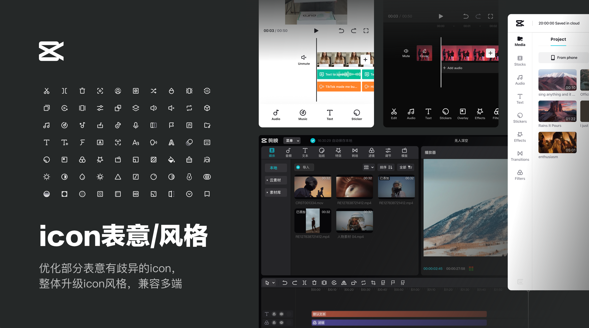
梳理线上体验问题，包括多语言适配问题，解决翻译不准确、文案过长缺少展示规则、日期书写顺序有误、交互反馈不足问题等。按照问题的显性程度与开发的工作量评估优先级，分批落地，
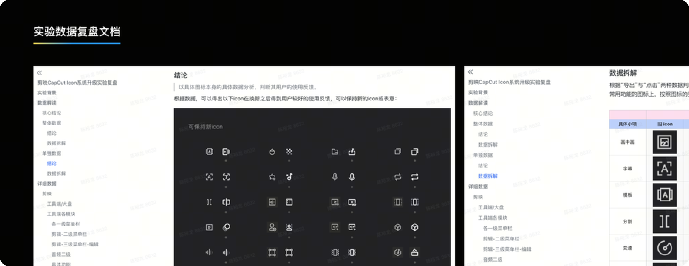
梳理表义有歧义的 icon，优化整体风格，主动协调剪同款、主框架业务方一起推动 icon、颜色、按钮等落地。在 icon 的实验中数据略显负向，针对编辑器 icon 做进一步拆解数据，得出优化方向。

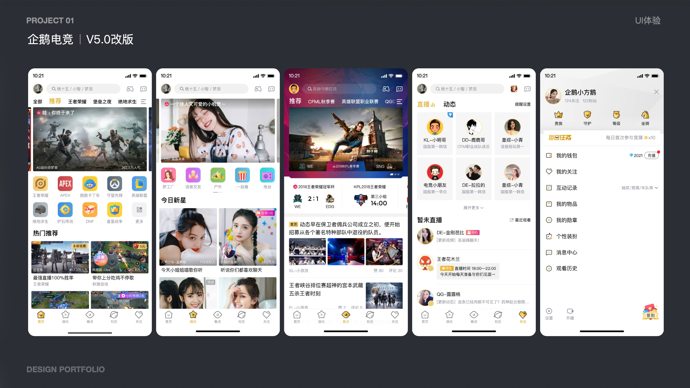

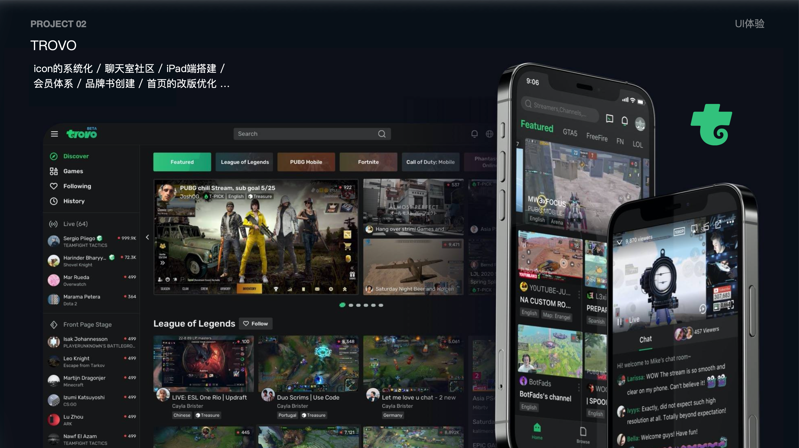
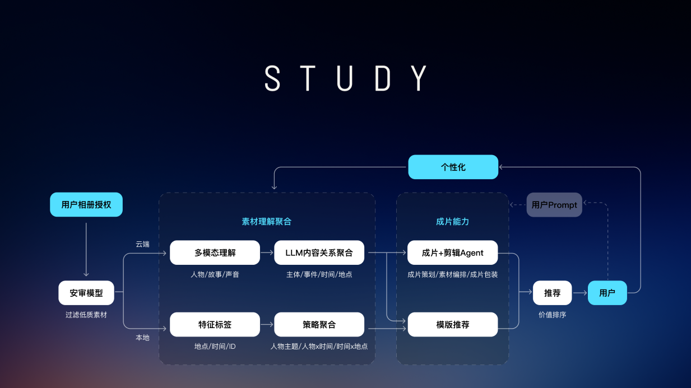
持续熟悉 AI 技术的更新迭代，让设计更有理解与深度；学习AI Coding技术，助力更好的设计表达与提效。
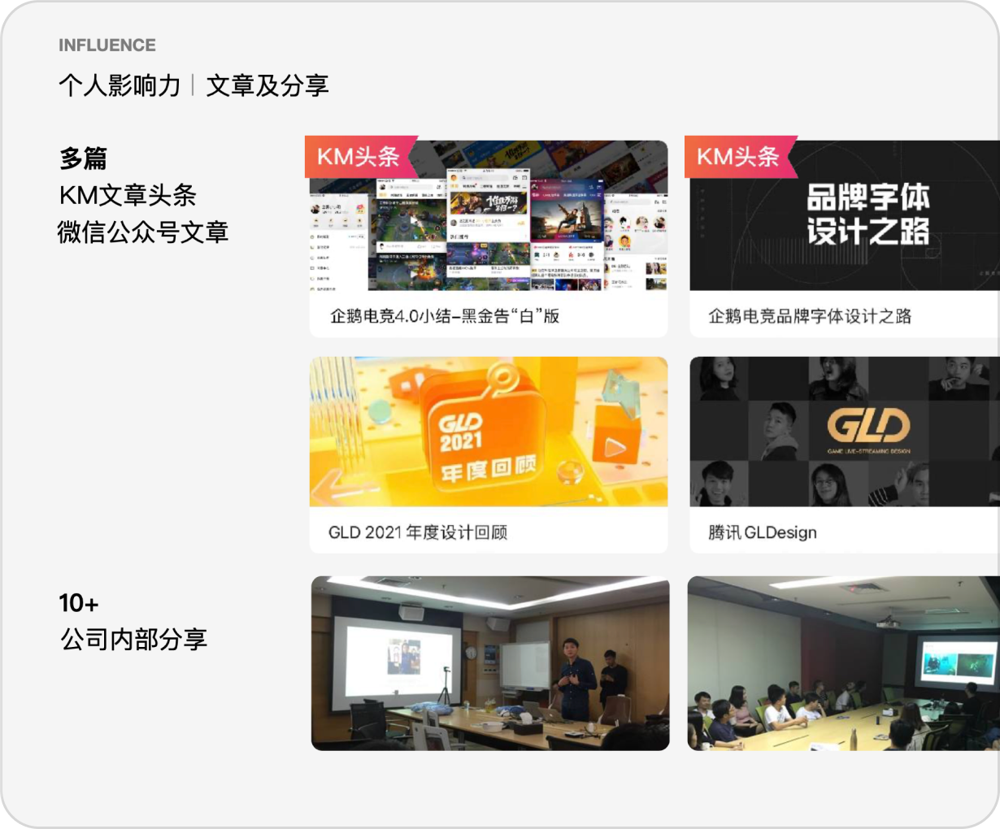
勤沉淀、乐分享，助力团队的整体设计水平的提升，同时提高对外影响力。
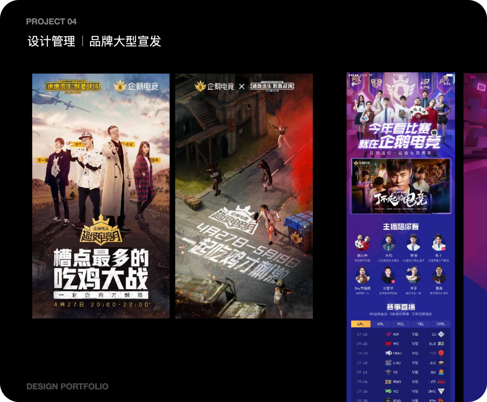
参与团队人才招聘流程，助力团队能力建设与梯队优化。培养新人，帮助其快速融入团队及熟悉业务，
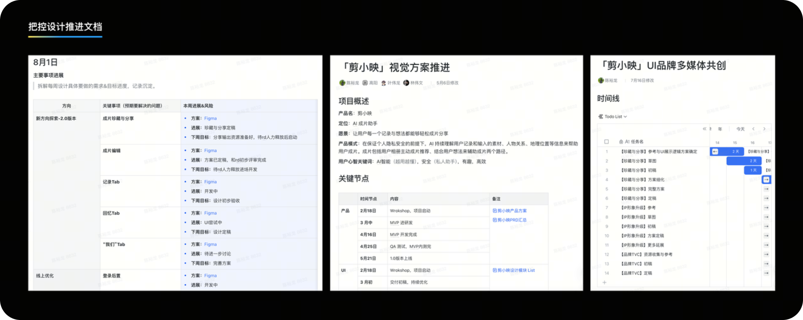
统筹项目团队管理、设计策略与项目全流程，定义视觉规范和设计标准；
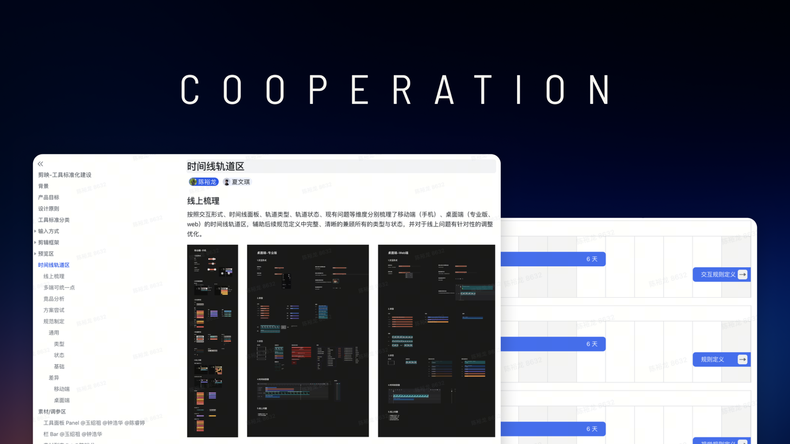
把控项目的稳步推进，协同产品、品牌、多媒体、算法、技术多方的资源调配